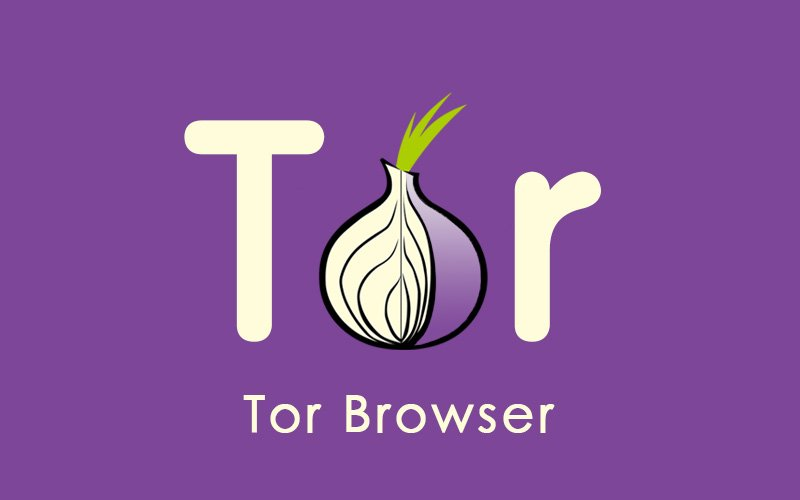

TOR браузер.

-
На сайте Вы сможете узнать:
- Что такое TOR браузер?
- История браузера.
- Кто и зачем использует?
Что такое TOR браузер?
Tor Browser - свободное и открытое программное обеспечение для реализации второго и третьего поколения так называемой луковой маршрутизации. Это система прокси-серверов, позволяющая устанавливать анонимное сетевое соединение, защищённое от прослушивания.
С помощью Tor пользователи могут сохранять анонимность в Интернете при посещении сайтов, ведении блогов, отправке мгновенных и почтовых сообщений, а также при работе с другими приложениями, использующими протокол TCP. Анонимизация трафика обеспечивается за счёт использования распределённой сети серверов - узлов. Технология Tor также обеспечивает защиту от механизмов анализа трафика, которые ставят под угрозу не только приватность в Интернете, но также конфиденциальность коммерческих тайн, деловых контактов и тайну связи в целом.
Tor оперирует сетевыми уровнями onion-маршрутизаторов, позволяя обеспечивать анонимные исходящие соединения и анонимные скрытые службы.
В 2011 году проект Tor был удостоен премии общественной значимости Фонда свободного программного обеспечения, а в 2012 году — награды EFF Pioneer Award.
История браузера.
Разработка системы началась в 1995 году в «Центре высокопроизводительных вычислительных систем» Исследовательской лаборатории Военно-морских сил США (NRL) в рамках проекта Free Haven совместно с DARPA по федеральному заказу. Исходный код был опубликован под свободной лицензией, чтобы все желающие могли провести проверку на отсутствие ошибок и вирусов.
В начале 2000-х годов проект получил название The Onion Routing. В октябре 2002 года впервые была развёрнута сеть маршрутизаторов, которая к концу 2003 года насчитывала более десяти сетевых узлов в США и один — в Германии.
О поддержке проекта, в том числе финансовой, в 2004 году объявила правозащитная организация Electronic Frontier Foundation, которая начала активно пропагандировать новую систему и прилагать значительные усилия для максимального расширения сети.
В 2006 году в США для развития сети Tor была создана некоммерческая организация Tor Project.
В 2008 году появился браузер Tor.
Существенную финансовую помощь Tor оказывают Министерство обороны и Государственный департамент США, а также Национальный научный фонд. По состоянию на февраль 2016 года Tor насчитывала более 7000 узлов сети, разбросанных по всем континентам Земли, кроме Антарктиды, а число участников сети, включая ботов, превышало 2 млн. По данным Tor Metrics, в июле 2014 года Россия вошла в тройку стран, наиболее активно использующих Tor.
В настоящее время существуют версии и решения Tor практически для всех современных операционных систем (в том числе и мобильных ОС, вроде iOS и Android), а также ряда прошивок и различного аппаратного обеспечения.
Кто и зачем использует?
Частные лица используют Tor для защиты неприкосновенности частной жизни и получения доступа к информации, заблокированной интернет-цензурой.
Скрытые сервисы Tor предоставляют своим пользователям возможность создавать собственные веб-сайты и электронные СМИ, не раскрывая при этом информацию об их реальном местоположении.
Социальные работники пользуются Tor при общении с учётом тонкой социальной специфики в чатах и веб-форумах для жертв насилия, конфликтов, беженцев, а также для людей с физическими или психическими отклонениями.
Журналисты используют Tor для безопасного общения с информаторами и диссидентами. Например, Эдвард Сноуден с помощью Tor передал информацию о PRISM газетам The Washington Post и The Guardian, еженедельник The New Yorker запустил специализированный сервис Strongbox для приёма компромата, а итальянские интернет-активисты создали сайт MafiaLeaks по сбору информации о деятельности мафии. Алексей Навальный рекомендует использовать Tor для отправки в его Фонд борьбы с коррупцией информации о злоупотреблениях российских чиновников.
Неправительственные организации используют Tor для подключения своих сотрудников к нужным сайтам в заграничных командировках, когда есть смысл не афишировать свою работу.
Общественные организации, например, Indymedia, рекомендуют Tor для обеспечения безопасности своих членов. Гражданские активисты из EFF поддерживают разработку Tor, поскольку видят в нём механизм для защиты базовых гражданских прав и свобод в Интернете.
Корпорации используют Tor как безопасный способ проведения анализа на конкурентном рынке, а также в качестве дополнения к виртуальным частным сетям.
Спецслужбы используют Tor для обеспечения секретности при выполнении особых задач. Например, тайное подразделение JTRIG британского Центра правительственной связи применяло её как одну из составных частей комплекса средств для обеспечения защищённого доступа к своим VPS.